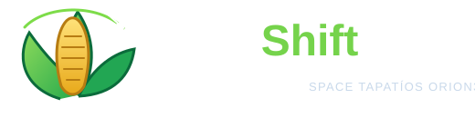

Avena
Avena sativaCool-season cereal for grain, forage or cover.
Check: moisture, frost and planting date.
AGRICULTURA INTELIGENTE · MÉXICO
A decision-support platform to explore crops, plan rotations and protect the resources of every farm.
We bring together agronomic knowledge, environmental data and practical tools. Recommendations are guidance and must be checked against field tests and local advice.
A platform for farmers, students and curious people: explore crops, compare rotations using NASA climate and soil-wetness data, and learn practices to protect soil fertility in Jalisco.
Illustrations were generated with AI assistance (Claude) for this project. Crop values are typical orientation ranges: verify them with INIFAP, SADER or a local advisor before deciding.Alternating crops helps break pest and disease cycles, varies nutrient demand and allows legumes to be included. Results depend on each plot.
A common option is a legume such as bean; sorghum is a lower-water alternative. It depends on water, season and market. Compare options in the Rotation Planner.
As a legume, bean fixes nitrogen with root bacteria and part of it can benefit the next crop. It does not replace a soil test.
The traditional example is the milpa: maize, beans and squash. See the Milpa & Soil tab.
General principles: keep the soil covered, add organic matter (residues, compost), diversify with legumes and reduce tillage. Do a soil test to guide decisions.
A crop grown mainly to protect and improve the soil rather than to harvest.
Keep plant or residue cover, reduce tillage and avoid leaving bare soil in the rainy season.
Consider lower-water crops, conserve moisture with residue cover and evaluate supplemental irrigation. The Rotation Planner shows the effect of a dry year.
Pick your region (above), soil type and priorities. MaizeShift combines NASA climate and soil-wetness data with crop characteristics to compare rotations.
The milpa is a traditional Mesoamerican farming system: a polyculture in which maize is grown together with beans, squash and chile, among other species, on the same plot. It is more than a cropping system: it holds centuries of cultural, economic and technical knowledge.
Milpa: several species grow together at the same time on the same area (polyculture). Rotation: crops take turns, cycle after cycle, on a plot; it helps maintain soil nutrients and break pest cycles. Both are diversification strategies and can be combined.
The Rotation Planner scores crop sequences. The milpa is not scored numerically because intercropping needs field-specific data this tool does not have.NASA POWER (community “AG”): 2 m air temperature (T2M), bias-corrected precipitation (PRECTOTCORR), root-zone soil wetness (GWETROOT) and daily maximum temperature (T2M_MAX), fetched live for each region’s coordinates, 1995–2025.
Growing season = June–October (typical rainfed cycle). Earlier period = 1995–2009, recent = 2010–2025. Trend = least-squares line. A “dry season” has rainfall below 85% of the 1995–2025 average. Rainfall = daily rate × days in month. Hot days = days with maximum temperature at or above the chosen threshold.
Rotation explorer: water supply = 70% of season rain + usable soil water (soil water capacity × 0.5 m × NASA root-zone wetness) + irrigation (limited = +100 mm). Dry year = 20th-percentile season rain. Heat pressure combines season temperature and warming. Crop and soil values are simplified, illustrative assumptions (typical ranges), meant to be replaced with local data and agronomist input; they are not recommendations. Scores are weighted by the farmer’s priorities.
Map popups show current conditions from Open-Meteo (not NASA data). Satellite imagery and place names: Esri.
Credits and references: NASA POWER, NASA GIBS, NASA SRTM, NASA MODIS (ORNL DAAC), GPM IMERG; ERA5 (ECMWF) and current weather via Open-Meteo; OpenTopoData; imagery and place names by Esri; open-source libraries Leaflet and Chart.js; CONABIO, CIMMYT and the studies cited in the Milpa & Soil tab. Code and illustrations created with AI assistance (Claude, Anthropic), under human direction.
Limitations: one grid point per region (cells of about 0.5° × 0.625°), no yield or irrigation data; soil wetness is model-based. Next steps: NASA SMAP observations and MODIS/Landsat vegetation indices.Cool-season cereal for grain, forage or cover.
Check: moisture, frost and planting date.Cool-season cereal; variety and timing depend on elevation and temperature.
Check: water availability and disease pressure.Adaptable cereal for grain, forage or processing.
Check: market contract and nutrient management.Cool-season legume, sensitive to excess moisture at critical stages.
Check: drainage, variety and diseases.Grain legume that can diversify rainfed systems in suitable environments.
Check: regional adaptation and market.Oilseed legume needing loose, well-drained soil for pod development.
Check: texture, calcium and disease rotation.Oilseed legume; inoculation and water management matter.
Check: inoculant, photoperiod and market.Deep-rooted perennial forage needing adequate establishment and water.
Check: salinity, drainage and irrigation.Deep-rooted oilseed; performance depends on soil, water and variety.
Check: pollinators, birds and market.Oilseed adapted to semi-arid settings; timely establishment is important.
Check: cycle, frost and market access.Can be included in milpa polycultures and cover part of the soil.
Check: spacing, shade and water competition.Vegetable with potential value and intensive water and pest management.
Check: production system, pests and market.Diverse vegetable crop requiring careful pest and water management.
Check: variety, crop health and market channel.Iconic perennial crop of Jalisco with a long cycle and land-planning needs.
Check: slope, erosion, plant health and designation rules.These cards are educational introductions, not technical packages or planting recommendations. Consult INIFAP and local advisors for dates, density, varieties and fertilization.
Intercropping does not eliminate competition. Density, variety, timing, water availability and fertility determine whether species complement or compete for light, nutrients and moisture.
Two or more crops grow simultaneously in the same field.
Crops follow one another over time, season after season.
Adjust rows and density using local experience and small trials.
Influences nutrient availability; measure before amending.
Nitrogen, phosphorus and potassium have distinct roles; adjust using soil tests.
Supports aggregation, biological activity and water retention.
Cover, roots and controlled traffic help protect structure.
Color or imagery cannot replace laboratory analysis. For fertility, salinity or deficiency diagnosis, take representative samples and consult a laboratory or agronomist.
Mix carbon- and nitrogen-rich residues, maintain moisture and aerate the pile. Mature compost should smell earthy.
Protect soil between cycles; choose species and termination timing based on water availability.
Reduces disturbance and keeps residues on the surface; requires weed management and suitable equipment.
Can reduce runoff on slopes; design must reflect terrain and water flow.
Monitor, identify accurately and combine prevention, biological control and selective measures.
Retaining or incorporating residues can add carbon; avoid burning and consider pests, moisture and operations.
Delivers water near roots; requires filtration, maintenance and sound design.
Distributes pressurized water; wind, evaporation and uniformity affect efficiency.
Channels runoff to storage or infiltration, with sediment control and safety.
The existing climate explorer uses NASA POWER data for regional points and lets you explore other coordinates on the map. These are gridded/model data, not measurements from your specific field.
Complete the form to receive reasoned options and points to verify.
Review soil tests, plan purchases, repair equipment and define rotations.
Prepare moisture conservation, check seed and monitor seasonal outlooks.
With the onset of rains, check moisture and planting windows by region.
Monitor weeds, pests, nutrition and sensitive crop stages.
Plan harvest, residue management and cover crops according to water availability.
Windows vary by elevation, region, variety, moisture and production system. This is not an official planting-date calendar.